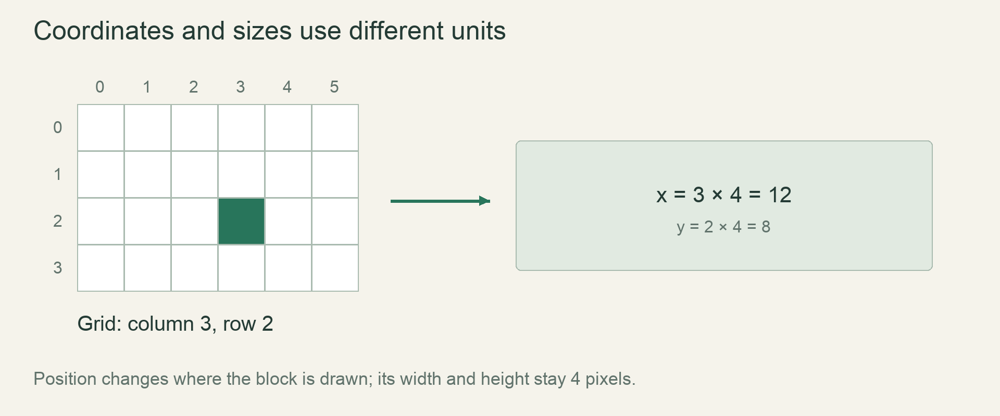

Start / First stepsLesson 11 of 100 · ~5 min reading + build time
Group coordinates with a struct
Define a Cell struct and keep its named coordinate fields together across frames.
Previously: Draw one simulation cell. Keep that working result available before starting this lesson.
Why we need this now
A single grain can survive as two loose variables. Multiple grains, reset functions and simulation updates will make that fragile. A struct lets us express “these coordinates belong to one cell” as a type rather than relying on matching variable names by convention.
Your result: Define a Cell struct and keep its named coordinate fields together across frames.

01Find the relationship we want to preserve
column and row are not two unrelated settings; together they describe one position. A struct groups fields into one value. Define struct Cell { column: i32, row: i32 } above main. This declaration describes a type; it does not create a grain or allocate a whole world.
Construct an instance with Cell { column: 12, row: 5 }. Field names make the inputs visible and reduce the chance of accidentally reversing coordinate arguments. The variable that receives this value now represents the complete teaching cell. Adding a material later will extend the same explicit state model.
02Type definition and value construction are different steps
The struct declaration lists each field’s type. A construction supplies an actual value for each field. Field order can differ during named construction, but every required field must be supplied unless a deliberate update/default pattern is used. We are not introducing that shortcut here; writing both fields keeps the first instance clear.
Access a field with dot syntax, such as cell.row. A field is not a function call: there are no parentheses. Start in the terminal by printing both fields, then replace the loose drawing variables with these accesses. This keeps the new syntax separate from the already-working window API.
03Decide where the value should live
The state belongs outside the frame loop because its lifetime spans many redraws. Declare let mut cell when you plan to update its fields, then draw from cell.column and cell.row inside the loop. Mutable ownership permits field changes such as cell.row += 1.
Do not derive Copy just because the struct is small. Our next lesson deliberately passes a custom struct by value and observes its move behavior. That will give borrowing a concrete purpose. For now, the owner in main stores one value, and dot access makes the relation between the coordinates visible.
04Keep the model small enough to explain
This Cell has only coordinates; it is a teaching representation of one visible grain, not the final eight-byte simulation cell. The production design stores coordinates implicitly in grid/chunk location and stores material state in each slot. We will change the representation when a grid exists.
That change is normal. We introduce a struct because it solves the present problem of coherent state, not because every later engine must store a position in every cell. End the episode by changing only row and confirming column remains unchanged. The viewer should see a named, inspectable value rather than an unexplained architecture diagram.
Read → predict → run → change
Walk through the working example
Complete focused example — src/main.rs
Download this worked example ↧
struct Cell {
column: i32,
row: i32,
}
fn main() {
let mut cell = Cell { column: 12, row: 5 };
println!("Before: {}, {}", cell.column, cell.row);
cell.row += 1;
println!("After: {}, {}", cell.column, cell.row);
}Read what each part does
- The type declaration does not itself construct a value.
- The mutable binding owns one struct across the prints.
- The final production grid representation will be different.
Expected result
Before: 12, 5
After: 12, 6Exact version numbers, paths and compiler wording may differ. Compare the behavior and file locations, not incidental output formatting.
Prediction · repair · transfer
Exercises you actually do
Write a prediction or make an attempt before opening a solution. Use the hint if stuck; then compare reasoning and verify with the stated check. A different implementation is fine when it satisfies the same contract.
Construct another value
Create a second Cell at column 20,row 9 and print it.
Need a hint?
A type declaration can describe many independent values.
Worked solution
let second = Cell { column: 20, row: 9 };
println!("{}, {}", second.column, second.row);Place these lines inside main. Updating the first cell does not change this separately constructed value.
How to verify your result
Both cells retain the values assigned to their own fields.
Repair a missing field
Omit row during construction and read the diagnostic.
Need a hint?
The struct type says both fields are required.
Worked solution
Restore row: 5 or another intentional row. Do not delete the field from the type merely to silence construction errors elsewhere.
How to verify your result
The construction satisfies the type definition again.
Integrate drawing
Replace column and row in the graphical example with cell.column and cell.row.
Need a hint?
Construct cell once before loop.
Worked solution
Keep the rectangle footprint and colour unchanged. The visual result should remain the same; only the representation of its state has changed.
How to verify your result
The window draws the same grain from the struct fields.
When it goes wrong
Start with the observed symptom. Change one assumption at a time instead of pasting fixes until the error disappears.
missing field in initializer
What is happening: The construction omitted part of the declared type.
Try this: Supply every required named field.
cannot assign to cell.row
What is happening: The owner binding is immutable.
Try this: Declare let mut cell when the example is meant to update fields.
Movement resets every frame
What is happening: The instance is reconstructed inside the frame loop.
Try this: Move construction before the loop so the same state survives redraws.
Explain it without the example
Why create the cell outside the rendering loop?
Reasoning to compare
The value must survive across iterations. Recreating it each frame would reset its state and erase accumulated motion.
Self-check only: test a prediction or ask your tutor if anything still feels arbitrary.
For your YouTube series
Turn the lesson into an episode
Open with the problem or result
A single grain can survive as two loose variables. Multiple grains, reset functions and simulation updates will make that fragile. A struct lets us express “these coordinates belong to one cell” as a type rather than relying on matching variable names by convention.
Teach in this order
- Find the relationship we want to preserve
- Type definition and value construction are different steps
- Decide where the value should live
- Keep the model small enough to explain
Record this demonstration
Define a Cell struct and keep its named coordinate fields together across frames.
Close with what the viewer can now explain
Explain the result without reading the code, make one predicted change, then show the observed result.
A lesson can span several recordings. The episode beats are a teaching outline, not a claim that every viewer learns at the same speed.
Finish with evidence
The grain remains visible. Resetting a field does not reconstruct an unrelated coordinate.
Make one small variation without copying: predict it, run it and explain any difference. On another day, repeat one exercise from memory before starting the next lesson. Ask your tutor about any step you can execute but cannot explain.
This is an attempt marker, not a grade. Learning records are written only after demonstrated understanding.
Primary sources for this lesson
Use sources to verify the mechanism. The lesson itself supplies the instructions; the links are not a substitute for teaching them.